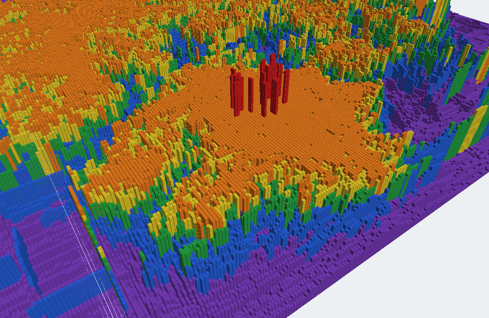
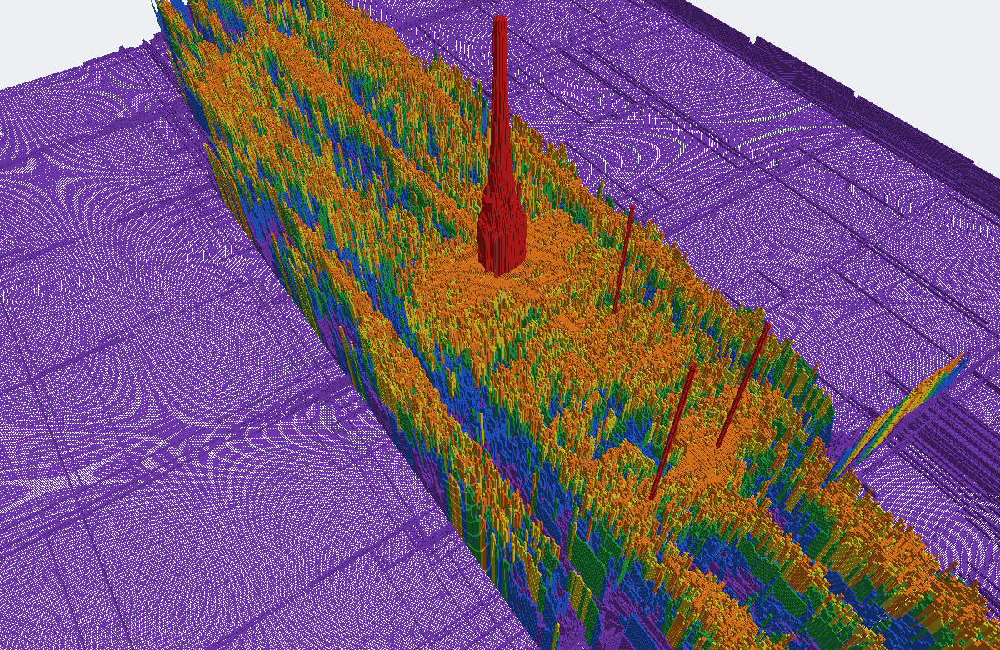

The third recap. Since 3 October: virtual capacity joined the standard and moved newblue1, multithreading was built and measured, eight new analysis tools mapped why the remaining overflow resists, and six further ideas were tested and closed. It ends the ISPD 2008 phase; the next step is the ISPD 2024 format.
| Measure | 3 October | 6 October | Change |
|---|---|---|---|
| Router | pd21route | pd23route | + virtual capacity (standard path), reclaim path on a second thread |
| Benchmarks at zero overflow | 11 of 16 | 11 of 16 | same, routes byte-identical |
| newblue1 | 48 | 38 | −21% |
| bigblue4 | 370 | 356 | −4% (runtime +39%) |
| newblue3 | 38,704 | 38,916 | +0.5%, older baseline, not like for like |
| newblue4 / newblue7 | 144 / 108 | 144 / 108 | same (newblue7 not rerun) |
| Total overflow | 39,374 | 39,562 | +0.5%, all from newblue3's baseline change |
| Proven-forced overflow (cut bound) | not known | ≥ 26,318 | newblue3 ≥ 26,264, newblue7 ≥ 54 |
| Mechanisms tested | 9 | 3 adopted, 1 parked (threading), 5 retired |
Every row is a legal solution, and our verifier agrees with the official contest scorer on every number. The 11 zero-overflow benchmarks are byte-identical to 3 October's (virtual capacity runs only on the standard path, which they no longer keep).
| Benchmark | Overflow | Scored WL | Runtime | NTHU-Route 2.0 overflow | Best of four | Proven floor | WL vs NTHU |
|---|---|---|---|---|---|---|---|
| adaptec1 | 0 | 5,405,278 | 36 min | 0 | 0 | — | +0.8% |
| adaptec2 | 0 | 5,243,664 | 23 min | 0 | 0 | — | +0.07% |
| adaptec3 | 0 | 13,142,861 | 37 min | 0 | 0 | — | −0.05% |
| adaptec4 | 0 | 12,205,838 | 11 min | 0 | 0 | — | +0.2% |
| adaptec5 | 0 | 15,651,405 | 89 min | 0 | 0 | — | +0.7% |
| bigblue1 | 0 | 5,700,481 | 47 min | 0 | 0 | — | +2.3% |
| bigblue2 | 0 | 9,205,885 | 45 min | 86 | 0 | — | +2.3% |
| bigblue3 | 0 | 13,166,745 | 29 min | 32 | 0 | — | +0.7% |
| bigblue4 | 356 | 24,863,041 | 10.7 h | 256 | 166 | 0 | +9.0% |
| newblue1 | 38 | 4,854,999 | 86 min | 164 | 0 | 0 | +5.5% |
| newblue2 | 0 | 7,617,454 | 3 min | 0 | 0 | — | +0.4% |
| newblue3 | 38,916 | 10,796,239 | 8.2 h | 31,810 | 31,024 | 26,264 | +1.6% |
| newblue4 | 144 | 13,711,471 | 2.7 h | 222 | 144 | 0 | +6.4% |
| newblue5 | 0 | 23,324,129 | 1.8 h | 18 | 0 | — | +0.8% |
| newblue6 | 0 | 17,936,527 | 1.7 h | 0 | 0 | — | +1.4% |
| newblue7 | 108 | 36,104,404 | 19.6 h | 68 | 68 | 54 | +1.6% |
NTHU-Route 2.0 and "best of four" from LMgr's re-run (ISQED 2013, Table II), as in the earlier recaps. "Proven floor" is the cut bound from cutbound: overflow no router can avoid; 0 means no cut forces any, not that zero is reachable. newblue7's row is from the 1 October configuration (not rerun). Zero-overflow runtimes are pd23route's with the reclaim path on a second thread.
Three kinds of measurement this round (the congestion maps, the ring and band analyses, and the cut tools) point the same way: the leftover overflow is a local problem around specific crowded spots, not a global shortage of wiring room.
Measured from the input file alone, before routing: the total wire demand against total capacity, and the standard congestion estimate (each net's wire spread over its bounding box), do not separate the 5 benchmarks with overflow from the 11 without. bigblue1 has the highest estimated congestion of all sixteen and routes to zero. What separates them is the tightest local cut: how much wiring must leave a small block of tiles (because nets have pins inside and outside it) against what the block's edges can carry.
Free capacity is a median 1–3 tiles from the hot tiles, and along each overflowed edge's own crossing line the spare to absorb its overflow sits within 11–43 tiles (except newblue3). The difficulty is not finding room but moving nets into it without pushing others out of it: every price push tried displaced neighbours faster than it relieved the hotspot.


Can a number computed from the layout alone, before any routing, say whether the router will reach zero? A first answer, from the sixteen benchmarks (gr/routability and gr/cutbound, seconds per benchmark):
| Pre-route measure | Separates hard from easy (AUC, 0.5 = chance) | Rank correlation with overflow | Reading |
|---|---|---|---|
| Tightest 3 × 3 escape cut | 0.95 | 0.75 | best single predictor |
| Tightest cut, rectangles up to 8 × 8 | 0.91 | 0.68 | close second |
| Share of edges over capacity in the congestion estimate | 0.40 | −0.17 | no signal |
| Total demand ÷ total capacity | 0.44 | −0.13 | no signal |
A simple rule, "the tightest 3 × 3 escape cut is above 0.67", flags all five hard benchmarks and two of the eleven easy ones: 14 of 16 right, no hard case missed. The two false alarms are telling. bigblue2 (0.80) is the benchmark whose zero has been fragile (one run ended at 2), and newblue5 (0.73) needed the slow tier's full effort. A cut above 1.0 proves overflow outright (newblue3, newblue7).
Sixteen benchmarks is a small sample, so read this as strong evidence for which kind of measure to use, not as a calibrated probability. The ISPD 2024 benchmarks would give a second, independent set to test it on. A full predictor would also need the through-traffic share, which needs a cheap routing estimate first.
| Experiment | Part | Result | Verdict |
|---|---|---|---|
| Virtual capacity (core edges priced 8 tracks lower) | 89 | newblue1 48 → 24 / 36 / 38 (p ≈ 0.012); newblue4 unchanged | adopted |
| …on the standard path only | 90 | 11 zero-overflow benchmarks byte-identical; reclaim path no longer harmed | adopted |
| Reclaim path on a second thread | 89 | Same routes; bigblue2 −9% time | adopted |
| Multithreading (batches, conflict re-search) | 92, 99, 100 | 2.3–3.9× faster; newblue1 overflow +20% (best variant, not significant) | parked |
| Ring pull (move warm-band load outward first) | 95, 99 | 4 / 15 tracks, with or without the ring box: same as without (39.3 vs 39.3) | retired |
| Flat penalty on full edges | 97 | newblue1 76 at 20, 136 at 100 (standard 38) | retired |
| Penalty scaled by distance to room | 98 | 36 at α = 1 (noise), 66 at α = 2 | retired |
| Long-net capacity budget, strong (60%, both stages) | 100 | First maze stage stalled near 8,000 overflow | retired |
| Long-net budget, gentle (80%, hotspot stage) | 100 | 42 / 34 / 34 vs 24 / 38 / 36 | retired |
| Analyses: maps, rings, bands, cuts, detours, predictor | 91–101 | See the sections above | tools kept |
A price on full edges applies to every net that crosses them, so many nets leave in the same round, land on the neighbouring edges and fill those. The stronger the penalty, the worse the result (38 → 76 → 136). Untried fix: decide the moves jointly instead of letting each net react to a price. For each overflowed crossing line, choose which nets cross where by a small exact assignment (a min-cost flow over the line's crossing slots) and reroute only those nets. The room exists (Part 97); a coordinated move would take it without the stampede.
Capping long nets at the same share of every edge fought ordinary congestion in the middle of the chip, where long nets carry most of the traffic. The design note in CLAUDE.md already says the share should be set per tile from a pre-routing demand estimate. That was not tried. Untried fix: a per-tile share, applied only where the escape-cut measure says through-traffic is the problem.
Nets in the same batch route against the batch's starting state. In a hotspot they all see the same few free tracks and collide; the rule that skipped re-searching some of them cost newblue1 50% more overflow. Untried fix: the coloring the design notes call for. Put nets whose search boxes overlap in different batches, so nets routed together cannot compete for the same edges. That keeps the speed outside hotspots and the one-thread quality inside them.
The pull moved load from the warm band to cool tiles, but room was never far away (1–3 tiles). It answered "where is room" when the real question is "who moves into it". No fix needed; the analysis that explained it is the useful outcome.
Ideas scoped earlier and still open: one hotspot box per cluster (newblue7), fewer bends, timing-driven priorities and a fair-share objective (both need the ISPD 2025 / OpenROAD setting).
Built and working: nets are routed in batches across threads and committed in a fixed order, so routes are identical at any thread count (checked at 1, 4 and 8 threads). On newblue1: 2.3–2.6× faster with the safe conflict rule, 3.9× with a looser one. The safe rule's overflow (38 / 34 / 46) averages 20% above one thread's (24 / 38 / 36), not significant with three runs but consistently on the wrong side, so the standard stays one-threaded. Batch coloring (above) is the likely fix.
All self-tested; all except grview (Mac only) build and test in CI.
The ISPD 2008 results have stopped responding to new pricing and pre-move ideas, and the analyses show why: what remains is either forced, at the best published level, or needs a coordinated move rather than a price. The next step is roadmap step 3, the ISPD 2024 format: a router that reads its .cap / .net files (the scorer already matches the official one). Its benchmarks also give the pre-route predictor an independent test. The coordinated reassignment idea stays first in line for a return to the 2008 residues.